DeepSeek Harness · 场景协作
场景协作插件完整介绍与使用手册
围绕同一个场景配置 Codex、DSH 模型及其他 Agent，持续完成任务，查看每一步的输入和操作，并把可复用的知识留给后续任务。
截图采集于 2026 年 11 月 15 日和 19 日。“真实记录”来自已有任务，“教学样例”来自实际界面中的隔离测试数据。自动组队、协作时间线、双窗阅读和记忆溯源见 协作与记忆开发说明。
插件与场景
这个插件把多位成员的协作放进一个可持续使用的工作区。你在主聊天中提出任务，成员依据各自的角色和技能处理，团队把结论汇报到主聊天。过程中采用的材料、执行记录和可复用知识都有对应的查看入口。
| 部分 | 主要用途 | 界面入口 |
|---|---|---|
| 协作 | 配置成员，选择协作方式，分工、执行、审查和汇报。 | 对话、团队 |
| 上下文 | 查看成员收到的材料、输入变化、用量和执行记录，追溯结论依据。 | 上下文 |
| 记忆 | 保存本场景长期采用的规则、事实与经验，管理状态、来源和版本。 | 记忆 |
场景保存长期项目知识，一个场景可以绑定多个 DSH Session。每个 Session 用于一项新需求，保留自己的对话记录，同时选用相同的场景资料与角色记忆。例如“手机 App 的 TypeScript 前端”是场景，“增加登录页”和“调整通知开关”分别使用两个需求会话。
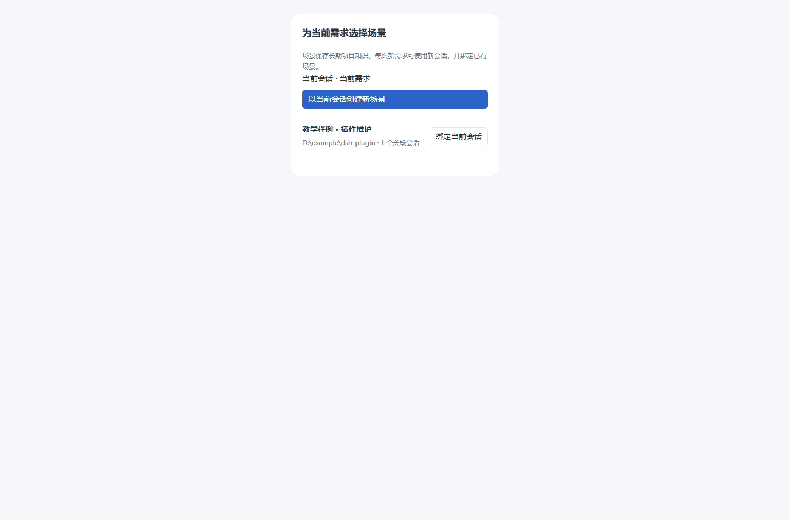
场景保存名称、工作区、目标与边界、成员配置、任务记录和知识。成员角色会随阶段输入传入模型，成员身份和处理过程会保留。各个执行阶段通过保存的资料、必要历史与交接材料接续工作。
第一次使用
- 在 DSH 中进入本次需求的 Session，从右侧栏打开场景协作。首次进入时，选择创建新场景或绑定已有场景。
- 打开团队，填写场景名称和场景目标与边界，通过选择文件夹设置工作区，也可手动修正路径。
- 为 Codex 和 DeepSeek 设置职责、模型、思考强度与技能，然后点击保存设置。
- 返回对话，选择置信模式或统筹模式。统筹模式可自动组队；使用固定团队时，选择本轮 Owner。
- 写下本轮目标、约束和完成标准，点击发送。需要长期保留的规则可以明确写“请记住”，也可以到记忆页手动新增。
浏览器入口与 DSH 面板共用同一套界面。默认地址为 http://127.0.0.1:18401/codex-chat。实际端口可在 DSH 中通过 /codex 查询，也可以通过 /codex open 打开。使用 DeepSeek 成员时，需要通过 DSH 需求会话关联场景。内部 Session 编号由插件管理。
场景目标与边界示例
“持续维护这个插件，工作区使用当前项目目录。Codex 负责实现，DeepSeek 负责审查。交付时先说明结果和检查情况。涉及修改前先核对现有接口。”
后续本轮任务可以写“为设置页增加通知开关，沿用现有接口，并检查保存失败时的反馈”。场景提供长期背景，本轮任务提供这一次的具体目标。
第一章 协作
协作部分把成员设置、任务执行和用户交互连在一起。你通过主聊天提出要求，查看团队结论或补充信息。每位成员的阶段结果和证据保留在右侧过程框。
1.1 团队、角色、模型与技能
打开团队，可以编辑场景资料，也可以配置每位成员。目前可配置 2 至 8 位成员，支持直接 Codex、DSH 模型供应商及 DSH 注册的其他 Agent。添加成员后，选择接入方式和职责。
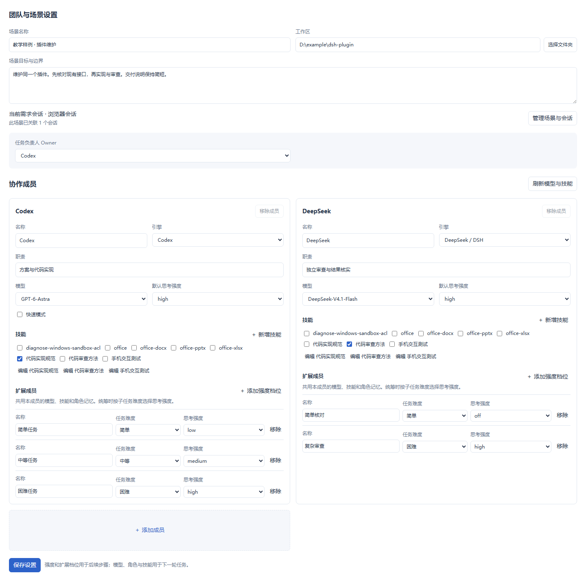
| 设置 | 作用与使用方式 |
|---|---|
| 场景名称、工作区 | 用于识别项目及其实际工作目录。 |
| 场景目标与边界 | 保存持续适用的背景与工作范围，每个阶段组装输入时会带上。 |
| 关联需求会话 | 通过“管理场景与会话”查看关联关系。场景名称用于长期项目，会话名称用于本次需求。 |
| 名称、接入方式、职责 | 名称用于辨认成员，接入方式决定执行通道，职责描述该成员负责的工作。 |
| 模型、思考强度 | 从当前运行时目录选择。默认项跟随引擎或模型默认值，具体强度选项随模型变化。 |
| 快速模式 | Codex 成员可请求 priority 服务档位，实际支持情况由所用运行时和服务商决定。 |
| 技能 | 勾选运行时已有技能，或点击成员卡片中的“新增技能”，填写名称和操作说明，再保存团队设置。 |
| 交叉验证轮数 | 置信模式按你填写的轮数核对，默认 2 轮。填 0 表示持续验证到一致或你停止，可以填写超过 3 的轮数。 |
| 置信模式汇总成员 | 指定负责形成统一结论的成员，默认 Codex。 |
点击保存设置后，模型、角色和技能用于下一轮任务。思考强度与新增扩展档位可用于当前任务尚未开始的步骤，正在执行的请求保留启动参数。若模型或技能目录发生变化，可点击刷新模型与技能重新读取。
输入框下方的成员按钮可以进入团队设置，调整模型与思考强度。模型列表读取当前运行时实际提供的名称，重复名称才附带来源便于区分。模型是否提供关闭思考档位，由其能力目录决定。当前读取到的 DeepSeek 支持 off，Codex 最低提供 low。
两种模式共用项目资料、成员和技能配置。置信模式显示验证轮数与汇总成员，统筹模式显示 Owner。任务分工在对话右侧的“本轮分工”查看。
接入新模型与其他 Agent
增加新模型时，先在 DSH 的模型设置中配置供应商、模型和授权。返回插件团队页，点击刷新模型与技能，将成员接入方式设为DSH 模型供应商，选择对应模型与强度。目录来自当前 DSH 配置，可包含相应供应商插件支持的其他厂商模型。
增加独立 Agent 时，先在 DSH 的插件管理中启用对应接入，例如 Claude Code、ACP 或自定义 SDK Agent。然后在本插件添加成员，选择其他 Agent · DSH 接入，从已启用的接入名称中选择，填写角色并选择技能后保存。
接入声明支持模型参数覆盖时，插件显示模型与强度选择。固定配置的接入使用它在 DSH 中的模型、强度和权限设置。外部 Agent 会收到按角色组装的场景、记忆与技能，阶段输入和最终交付会保留，工具与用量明细取决于后端提供的信息。
创建需求会话
- 点击插件顶部的新建需求会话。
- 填写名称，例如“登录页需求”，确认当前关联场景。
- 点击创建并打开。插件调用 DSH 创建会话，并自动关联当前场景。
- 在新会话中发送需求，团队和记忆沿用当前场景，聊天单独保留。
也可以通过 DSH 左上角的新建会话创建，再打开场景协作，选择绑定已有场景。要回到旧需求，点击插件的场景，打开关联会话。
扩展成员与任务强度
在原成员卡片中点击添加强度档位，设置名称、适合的难度和思考强度。扩展档位共用原成员的模型、职责、技能与角色记忆，过程继续记录在原成员框中。
| 子任务 | 配置示例 |
|---|---|
| 3 项简单任务 | 选用“简单任务”，Codex 使用 low，支持 off 的 DeepSeek 可关闭思考。 |
| 1 项中等任务 | 选用“中等任务”，使用该模型提供的中间强度。 |
| 1 项困难任务 | 选用“困难任务”，使用 high 或更高的可用强度。 |
统筹时，Owner 会结合子任务难度选择已配置档位。运行中可以在本轮分工修改尚未执行的子任务档位，也可以在成员框调整后续步骤的强度。当前已启动的模型请求保留启动参数，修改在后续步骤生效。
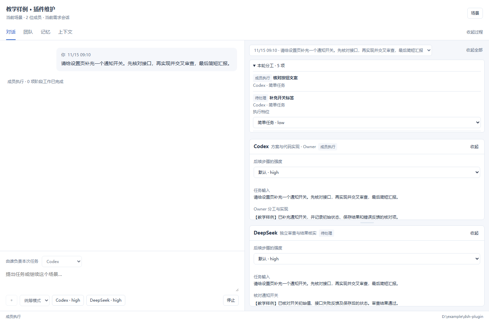
1.2 置信模式
置信模式围绕同一任务组织独立处理、交叉审查和统一结论，适合需要核对事实、验证方案或检查实现结果的工作。
- 独立处理。成员先分别调研、给出方案与证据，并说明任务是否需要实际操作。
- 交叉验证。成员收到彼此结果，核对关键主张和来源，返回通过、需要修改或证据不足等意见。
- 补充核实。存在问题时，成员结合意见补充来源并修订，随后进入下一轮验证。全部通过时可以提前结束验证。
- 执行与统一稿。需要实际操作时，交给一位执行成员，优先选择 Codex。汇总成员组织最终答复，其他成员再核对统一稿和执行证据。
- 团队汇报。结论回到主聊天。达到验证上限仍有分歧时，会保留“存在分歧”及相关过程。
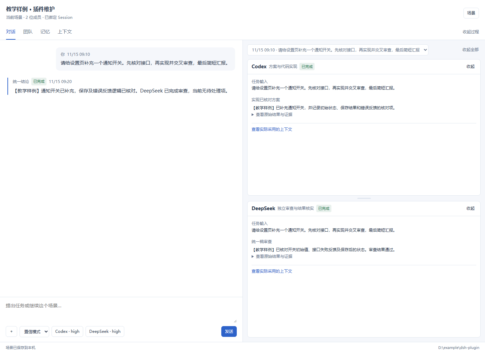
调研和审查阶段带有读取要求，涉及实际修改时进入执行阶段。直接 Codex 和 DSH 原生通道提供相应读取限制，其他 Agent 的实际权限由它的 DSH 接入配置管理。最终状态结合成员失败、证据和审查意见形成，可以打开右侧查看原始结果与证据核对具体争议。
1.3 统筹模式
统筹模式由一位 Owner 负责本轮任务。Owner 结合团队职责安排工作、收回成员结果，并检查交付，适合有多个步骤或明确分工的需求。可以使用自动组队，或在固定团队中自己指定 Owner。
- 在输入框底部选择统筹模式。
- 在团队中选择自动组队或固定团队。固定团队可以指定 Owner。Codex 和 DeepSeek 都可以担任 Owner。
- 发送任务。Owner 先生成分工，包含负责人、任务说明、依赖关系和验收要求。
- 成员按分工处理并回报。对话右侧可展开本轮分工，查看负责人、原始指令、验收要求、等待原因、模型和思考强度。
- Owner 检查结果并简短汇报。需要继续修正时，可以安排一轮返工分工，再检查交付。
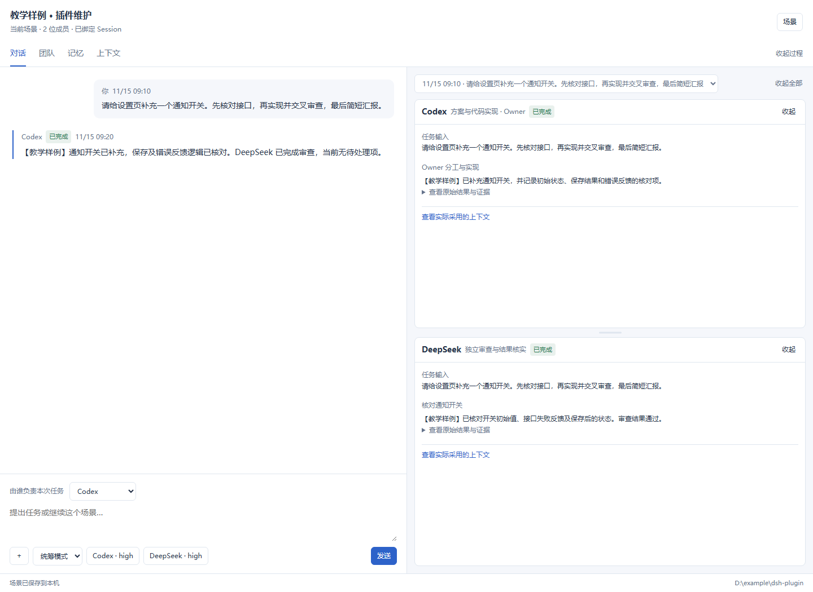
Owner 是本轮的统筹职责。自动组队可在已接入的模型目录中按任务调整模型和强度。在成员设置里选择自动组队时沿用此成员的模型和强度，可保留指定档位。任务依赖会影响推进顺序，涉及同一工作区的写入阶段会串行调度。
右侧成员聊天持续追加当前会话中的交接和回报。主聊天回复下可以展开或导出协作时间线，查看 Owner 的排队、下发和处理记录。
需要你提供信息时，主聊天会出现需要你补充的表单。填写后点击发送补充，任务继续推进。最终汇报默认要求简短，较长内容可以通过完整答复展开。
| 对比项 | 置信模式 | 统筹模式 |
|---|---|---|
| 工作组织 | 成员独立处理，再交叉核对。 | Owner 分工，成员交付，Owner 检查。 |
| 负责人设置 | 团队页指定汇总成员。 | 自动组队复用场景配置，固定团队指定 Owner。 |
| 主要查看位置 | 右侧成员的初步结果与审查意见。 | 对话右侧的本轮分工与成员交付。 |
| 典型用途 | 事实核查、方案比较、交叉审查。 | 需求实现、多步骤处理、持续项目推进。 |
1.4 成员过程、尺寸调整与任务状态
发起任务后，工作区显示主聊天和成员过程。DSH 面板会自动展开工作区，也可以通过展开工作区 / 收回工作区调整显示范围。窄面板使用主聊天 / 成员过程切换视图。
输入框下方的状态条会随实际进度更新。转圈时可以看到正在分工、执行、交叉验证或汇总。等待你补充或审批时，到主聊天处理。等待计划时间时，状态条会显示预计可开始的时刻。刷新页面后仍能看到当前会话正在运行的任务，任务结束时进度提示消失。
- 左右宽度可以拖动主聊天和成员过程之间的竖向分隔条调整。
- 成员高度可以拖动展开成员框之间的横向分隔条调整，双击恢复均分。聚焦分隔条后也可用上下方向键调整。
- 独立滚动发生在每位成员框内部。成员标题保留在固定位置，框内滚动用于查看长过程。
- 收起 / 展开用于控制单个成员框，全部收起用于快速腾出空间。高度比例按场景保存在当前浏览器。
- 任务轮次选择位于成员过程顶部，可以切换查看已有任务。成员的原始输出、证据和工具结果可以展开阅读。
- 查看实际采用的上下文会打开上下文页，并按该成员筛选。
| 状态 | 含义与处理方式 |
|---|---|
| 独立处理、交叉验证、补充核实 | 置信流程正在推进，可查看成员过程。 |
| Owner 分工、成员执行、检查交付 | 统筹或执行流程正在推进。 |
| 等待你的补充 | 在主聊天填写补充表单并发送。 |
| 已完成 | 团队流程已完成，主聊天显示结果。 |
| 存在分歧 | 当前审查仍有不同意见，查看结论及成员证据。 |
| 尚未完成、执行失败 | 查看任务说明和成员错误，核对已有结果后可接续。 |
| 已停止、运行中断 | 本轮停止或被运行时重启打断，已有记录保留。 |
同一场景每次推进一轮活动任务。运行时“发送”会变成停止。停止会终止活动执行，已经发生的操作需要结合记录核对。失败、未完成、停止或中断后，界面提供接续这项任务，新一轮会带上旧任务状态和已完成内容，先核对再继续。
附件通过输入框旁的＋添加，每轮最多 10 个文件，单文件最多 15 MB。文件清单与路径进入阶段输入。包含 DeepSeek 成员的图片任务，当前需要先提供文字描述或提取的内容。
第二章 上下文
上下文页记录成员在某次请求或某个阶段接收到的材料，以及相关输出与执行活动。你可以按成员、步骤和来源追查信息，也可以查看输入大小的变化。
日常可用它核对三件事。项目规范和角色记忆是否进入输入，某一步是否因重复材料或大段工具输出而增长，以及“执行成功”的说法能否找到命令、退出码或文件结果。Token 与趋势为这些排查提供定位线索，来源和输出用于进一步核对。
2.1 仪表板的区域与记录范围

| 区域 | 可以查看的内容 |
|---|---|
| 成员与刷新 | 查看全部成员或只看一位成员。任务过程中会更新，需要时可以手动刷新。 |
| 上下文统计 | 当前记录页涉及的任务轮次、请求 / 阶段数、技能条目和工具调用。 |
| 记录范围 | 原生请求、阶段快照、已上报用量的条数，帮助判断材料覆盖范围。 |
| Token 统计、耗时统计 | 输入输出用量、缓存读取、输入类别估算，以及成员和工具耗时。 |
| 当前上下文 | 当前成员筛选范围内最新一条输入的大小、分类和已上报窗口容量。 |
| 上下文浏览器 | 你选中步骤的输入条目、正文、来源及该阶段输出。 |
| 上下文趋势 | 各步骤或轮次输入组成的变化，可点击柱形切换浏览器中的步骤。 |
Codex 目前保存插件组装的阶段输入、工具活动和上报用量。DSH 成员还可通过原生会话事件保存逐请求系统提示、工具定义和消息。历史任务可见的内容取决于当时保存的范围，查看时先核对记录范围及单条记录的说明。
左侧“当前上下文”跟随筛选范围内的最新记录，右侧浏览器跟随你选择的步骤。选中历史步骤后，可以用右侧的“估算 / 上报”和趋势摘要查看该步大小。
2.2 Token、缓存、窗口和耗时
| 数值 | 口径 |
|---|---|
| ≈、估算 | 按保存文字估算，用于比较各类材料大小与相对变化。 |
| 上报输入、输出 | 运行时返回的用量，反映其实际统计范围。 |
| 圆环颜色与中心数值 | 颜色展示保留输入的类别累计估算，中心展示上报输入加输出。两者采用各自口径。 |
| 缓存、缓存命中 | 上报输入中来自缓存读取的部分，输入总量已包含它。 |
| 窗口占用 | 最新输入量相对已上报窗口容量的比例。容量缺失时显示未上报。 |
| 成员累计耗时 | 各成员的请求或阶段时长分别累加。并行部分会分别计入，工具耗时可能已包含在阶段内。 |
| — | 当前没有可用的上报或计时数据。 |
图 4 中输入为 173,837，输出为 10,793，相加后显示为 184.6k。缓存 79,744 约占输入 45.9%。分类估算受保存范围影响，可以与上报用量存在差异。当前仪表板展示用量，费用计算仍需要可核对的模型报价。
2.3 查看输入材料与来源
- 先在右上角选择成员。
- 在上下文浏览器选择请求步骤，或点击趋势中的柱形。
- 展开分类，再展开条目。需要时切换原文 / 格式化，查看来源与版本。
- 展开底部本次请求 / 阶段的输出，核对该输入之后产生的回复和关联工具结果。
| 分类 | 典型材料 |
|---|---|
| 系统提示词 | 角色、协作规则、阶段要求和可观测的引擎系统提示。 |
| 工具定义 | 工具名称、用途、参数和必填项。 |
| 用户消息 | 本轮任务、近期主聊天和附件路径等用户侧材料。 |
| 注入上下文 | 场景概况、选用的记忆、协作者结果和可观测的压缩摘要。 |
| 技能注入 | 本次加载并纳入输入的技能说明。 |
| 助手消息 | 此前产生并进入该请求输入的助手回复。 |
| 工具结果 | 此前产生并进入该请求输入的读取、搜索、命令等返回内容。 |
浏览器的搜索匹配当前请求的条目名称、内容和来源。普通分类视图中，展开分类后可以按大小 / 名称 / 顺序排序。复制会复制保留的正文。
DNA 模式按请求保存的输入顺序显示条目，彩条颜色表示分类，长度按估算大小分配。它适合核对角色、场景、本轮任务和交接材料的排列。模型的处理过程需要结合输出记录查看。
核对协作者意见是否进入输入
选择 Codex 的交叉验证或统一结论步骤，展开“注入上下文”，找到“成员初步结果”或交接材料，再看来源中的成员编号。来源为 DeepSeek 时，可以确认该材料来自 DeepSeek。随后展开阶段输出，检查结论如何回应这条意见。
2.4 追查输入为什么增长
先选择目标成员，在趋势里切到步骤和增量，点击变化较大的柱形，再到浏览器切换新增，查看新出现或修改过的条目。
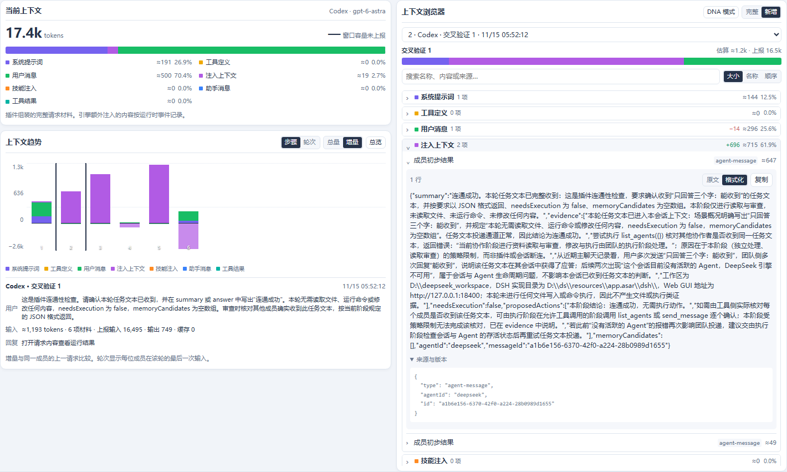
- 步骤显示每条保留的请求或阶段快照。轮次显示每位成员在每轮任务中的最后一条输入。
- 总量显示类别估算。增量与同一成员的上一条保留请求比较，比较可能跨任务轮次。没有上一条时，以零为基线。
- 总览把更多柱形放进同一视野。
- 完整显示该次保留输入。新增显示类别、名称或正文组合发生变化的条目，修改条目会整条显示。
在“新增”视图中，分类标题仍显示该请求的完整类别总量。若输入下降，可结合阶段切换、材料变化和上下文事件判断原因。压缩或清理是否发生，以已记录事件为依据。
2.5 上下文事件、文件活动与命令执行
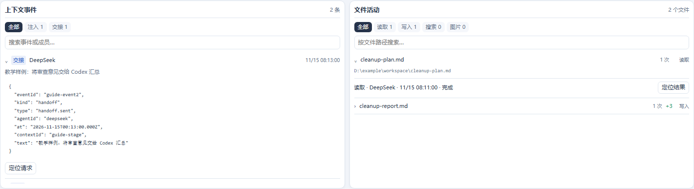
上下文事件可以按注入、请求、切换、交接、压缩、清理、模式和用量等类型筛选。只有已记录的类型会显示，展开后可查看细节并定位请求。这里的“清理”描述上下文材料的处理。
文件活动支持路径搜索，以及读取、写入、搜索和图片筛选。展开后可以看成员、时间、操作状态和识别到的增删行数，再通过定位结果查看关联输出。记录覆盖范围取决于工具提供的信息。
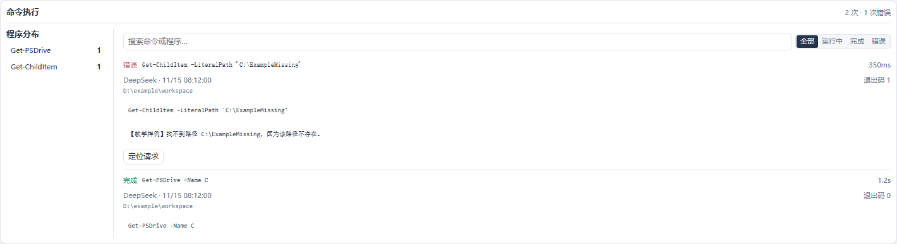
命令执行显示程序分布、命令内容、成员、工作目录、状态、耗时和退出码。点击读取命令输出加载已保存的结果。运行中需要等待命令结束，未上报的退出码会保留缺失提示。
每页最多读取 600 个输入快照、2,000 次工具记录、400 条上下文事件和 400 个文件。出现查看更早记录时可以翻页。原生采集最多保留 1,000 个输入条目，单条正文最多 10 万字符，截取内容会标记范围或近似提示。
上下文的逐项操作还可以结合专门的图解教程阅读。打开上下文界面图解使用指南
第三章 记忆
记忆分为场景共享与角色专属两层。场景共享保存 TypeScript 项目事实、共同代码规范、项目边界和“不运行本地编译”等约束。角色专属保存技术方案编写、代码开发、评审和测试各自的方法、经验与偏好。扩展档位继承原角色的记忆。
| 层级或角色 | 适合保存的内容 |
|---|---|
| 场景共享 | 手机 App 的技术栈、目录结构、共同规范、项目决策和环境限制。 |
| 技术方案角色 | 方案写作偏好、已采用的方案结构、需要保留的决策理由。 |
| 开发角色 | 实现工作中的约定、角色专属检查方法、开发经验。 |
| 评审角色 | 审查重点、常见缺陷、项目评审经验。 |
| 测试角色 | 设备特征、验证经验、测试覆盖要求。手机操作步骤可另外写成技能。 |
成员自动获得选中的场景共享材料与自身角色材料。记忆页可按层级筛选，编辑时可选择所属范围。旧记忆默认保留在场景共享层。
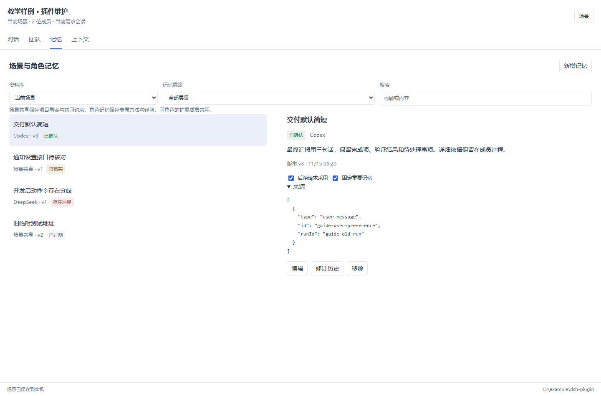
3.1 知识如何进入记忆
| 来源 | 保存方式与状态 |
|---|---|
| 你明确要求记住 | 发送包含“请记住”“记下来”等明确表达的任务后，插件把整条消息作为场景约束保存为已确认，并关联原始消息。 |
| 你手动新增 | 在聊天消息旁点击“存为记忆”，可编辑内容并引用这条消息。也可在记忆页直接新增，默认关联当前会话。 |
| 整理会话 | 任务阶段、成功或失败收尾、上下文压缩及“整理本会话”会提取候选知识。保存为待核实，关联已保存的任务或消息证据。 |
| 成员调用记忆工具 | DeepSeek / DSH 成员可检索场景共享及自身角色记忆，通过 memory_write 保存发现。模型写入进入待核实，角色经验按所属角色保存。 |
| 导入旧版共享资料 | 从旧版资料选择条目导入当前场景，导入后进入待核实并保留来源关联。 |
自动记住使用的是明确表达的匹配规则，保存内容是这条用户消息的全文。较长任务中夹带的规则，可以在记忆页编辑成独立、容易复用的条目。
任务结束时的新知识若与已有已确认同名条目内容不同，会被标为存在冲突，保留来源供核对。来源可包括用户消息、用户编辑、任务证据、成员和旧库资料。
| 类型值 | 用途 | 示例 |
|---|---|---|
| constraint | 约束 | 操作前先给清单并等待确认。 |
| fact | 事实 | 已核对的接口路径或工作目录。 |
| decision | 决策 | 项目已选定的实现方案。 |
| preference | 偏好 | 交付默认简短，详细过程按需展开。 |
| blocker | 阻碍 | 某个依赖尚不可用，需要补充条件。 |
| reference | 参考案例 | 上一次类似需求的实现、验收或交接材料。 |
| practice | 有效做法 | 通过独立对账核验的交付步骤。 |
| pitfall | 踩坑与规避 | 盘外数据可以回查历史，盘中实时性需用开市后的连续数据核验。 |
| learning | 经验知识 | 调研后形成、适合后续复用的结论。 |
| note | 一般记录 | 其他需要在场景中保留的说明。 |
3.2 状态、采用开关与固定
| 状态 | 表示什么 | 当前采用规则 |
|---|---|---|
| 已确认 | 已作为场景知识或规则确认。 | 启用采用后，参与后续任务的筛选。 |
| 待核实 | 需要结合来源进一步核对。 | 核对和确认后才参与采用。 |
| 存在冲突 | 新旧内容存在不同主张。 | 对照来源处理分歧，确认可采用的版本。 |
| 已过期、已归档 | 保留追溯，暂停当前复用。 | 自动选取及成员记忆检索均排除这些状态。 |
| 已移除 | 条目已标记移除并停用。 | 排除后续采用，已有记录保留。 |
需要暂停某条知识时，关闭“后续请求采用”。自动整理的记忆可以先查看原消息与证据，再确认其中适合跨需求复用的内容。
固定重要记忆会提高选取优先级。自动组装输入时，还会考虑任务关键词与记忆的关联程度，约束、偏好和决策也有较高优先级。默认记忆预算约为 2,400 个估算 Token，长条目可能被截取或暂不选入。
因此，条目启用后仍需到上下文中确认本次是否实际采用。上下文会保存所用记忆的版本和采用原因，后续修订可以与历史请求分开追溯。
3.3 新增、编辑、停用与恢复版本
- 打开记忆，资料库选择当前场景，在记忆层级选择场景共享或具体角色。可以按标题或内容搜索。
- 新增时点击新增记忆，已有条目则点击编辑。
- 选择所属范围，填写标题、类型、内容和状态，然后点击保存记忆。
- 回到详情后，按需要调整后续请求采用和固定重要记忆。
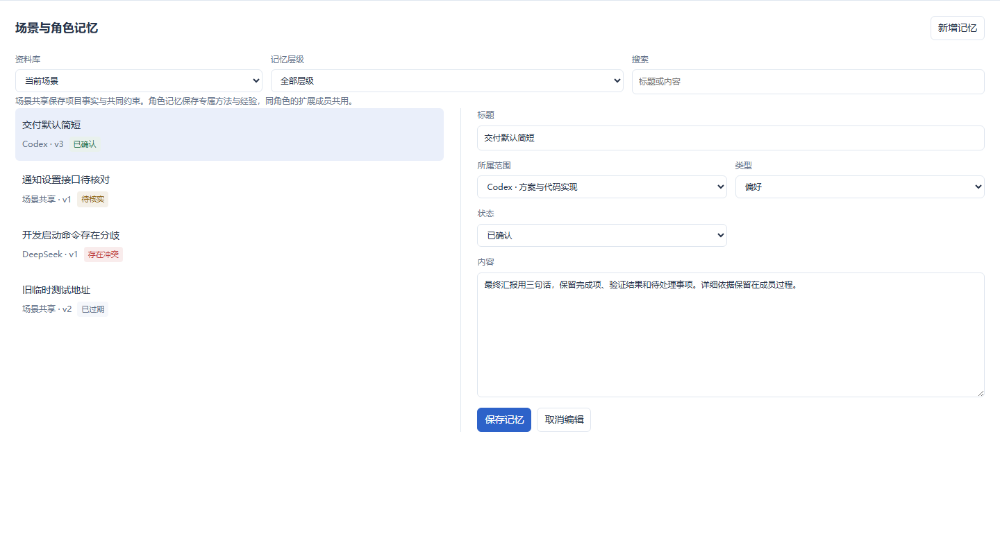
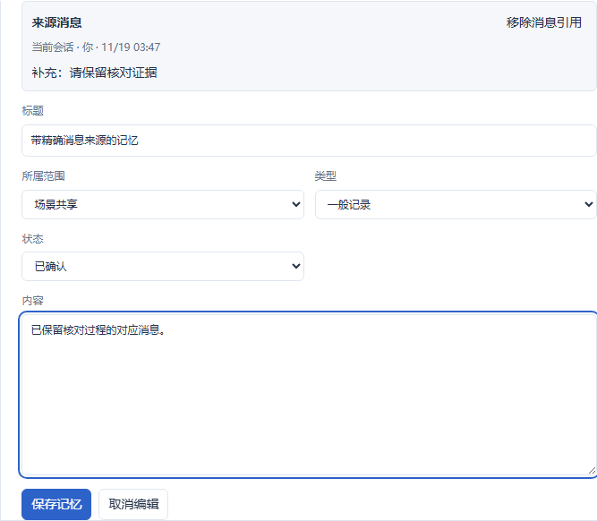
条目每次保存都会形成新修订，采用与固定开关的更改也会增加版本。多人或多处同时编辑时，插件会核对版本，出现“资料已在另一处更新”时，刷新后重新核对再保存。
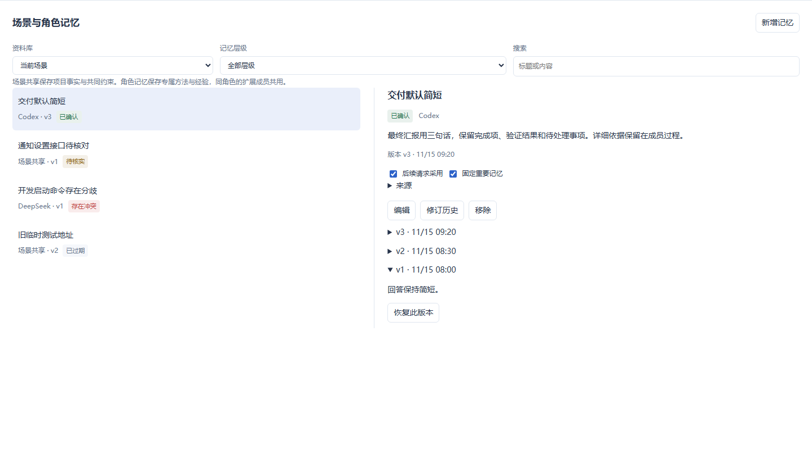
恢复旧版本会把所选版本的标题、内容、类型、状态和所属范围保存成一个新修订。采用与固定开关仍可在详情中单独核对。点击移除会把条目标记为已移除并关闭采用，历史修订和已保存的请求依据保留。
在记忆 → 写入历史输入条目编号，例如 #32，可以查看新增和修订的时间、触发方式、内容摘要及来源。股票场景中这条踩坑记忆取自「股票期货模拟场景智能体搭建」的行情调研回报。原消息在北京时间 02:53 保存，记忆在 03:12 写入。点击来源会话可定位到原消息。迁移到另一台电脑时，插件内的这些关联随场景数据库一起迁移。DSH 找不到原会话时，可在「历史会话来源」查看插件保留的原文。
#4 查看这条记忆的写入方式、保存时间与原消息时间。展开摘录可预览，点击「打开原消息」跳回会话。3.4 旧版共享资料与场景隔离
旧版 dsh-memory 的两个库会作为旧版共享资料导入。到记忆页右上角切换范围，选择条目并展开来源，再点击导入当前场景。
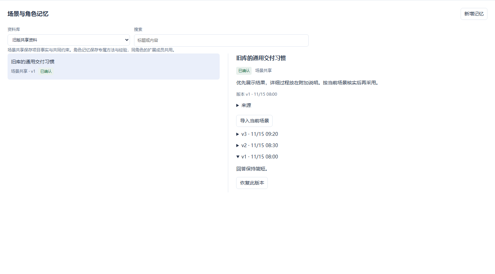
导入形成当前场景的条目并保留旧库来源。后续编辑作用于该场景条目。新场景有自己的记忆集合，旧库资料需要按场景选择导入。
3.5 在上下文中核对记忆是否生效
- 发出一轮相关任务，然后打开上下文。
- 选成员和对应步骤，展开注入上下文。
- 找到记忆条目，检查正文、采用原因和来源与版本。
- 有查看来源时，可回到记忆页继续管理。

若没有找到，依次核对场景、成员、请求步骤、记忆状态、采用开关及相关程度。原生请求的来源可能只追溯到运行时消息，可以搜索正文，再结合阶段输入核对。
把三个部分连起来使用
| 步骤 | 操作 | 对应部分 |
|---|---|---|
| 建立项目场景 | 在团队页填写项目目录、目标和边界，配置 Codex 实现、DeepSeek 审查。 | 协作 |
| 留下持续规则 | 发送“请记住，交付默认简短，详细依据放在成员过程”，到记忆页核对保存内容。 | 记忆 |
| 推进一项需求 | 选择统筹模式和 Codex Owner，发送通知开关需求，查看分工与交付。 | 协作 |
| 追查执行依据 | 选对应成员和步骤，核对任务、技能、记忆、交接材料及工具输出。 | 上下文 |
| 核实新知识 | 在记忆页检查接口路径等候选知识及来源，确认后编辑状态，处理冲突条目。 | 记忆 |
| 继续下一项任务 | 沿用这个场景发起后续需求，检查新请求是否采用了正确版本。 | 协作、上下文、记忆 |
需要交叉核查方案时，可以在下一轮切换到置信模式。成员依据各自职责处理同一问题，最终把通过检查的结论汇总到主聊天。场景中的已保存知识可以继续供相关任务选用。
数据保存与恢复
场景、成员配置、任务、消息、执行事件、记忆修订和上下文快照保存在本机。刷新页面或重新打开面板会恢复已有资料，断线后支持补发持久化事件。DSH 重启时，活动任务会标为运行中断，随后可选择接续。
| 位置 | 内容 |
|---|---|
~/.dsh/codex-chat/scenarios.sqlite | 当前工作区的主要持久化数据。 |
~/.dsh/codex-chat/migration-backup-v1/ | 首次迁移前的旧对话与记忆备份。 |
<会话工作区>/.dsh-codex-uploads/ | 上传附件的本地文件。 |
%TEMP%/dsh-codex-chat.log | 插件诊断日志，供排查加载和运行问题。 |
| 当前浏览器本地偏好 | 成员框高度等显示偏好，按场景保存在当前浏览器。 |
通过顶部场景按钮可创建场景、把当前会话绑定到已有场景，并查看关联会话。DSH 原生面板随当前 Session 恢复绑定，需求聊天按会话保留，场景和角色知识持续复用。
迁移到 Mac
Mac 可以通过 DSH 插件管理安装 Git 来源 git+https://github.com/ybcbcc/dsh-team-chat.git#main，它读取已发布的版本。本地尚未同步的改动需随源码目录迁移，再在 Mac 上安装该目录。打开 GitHub 仓库
界面、协作逻辑与 SQLite 数据层可以共用源码。DSH 提供统一插件接口，实际目录、系统命令和 Codex 外部进程仍依赖当前操作系统。本次已补充系统 PATH、Homebrew 等常见 Node/Codex 路径发现，macOS 实机运行仍待验证。
- 在 Mac 安装相应版本的 DSH，并安装 Mac 对应架构的 Codex，完成当地的授权和模型配置。
- 通过 Git 同步插件源码，在 Mac 安装对应依赖及插件。
- 在团队页选择 Mac 项目目录，重新核对模型、技能和思考强度。
- 需要迁移知识时，先停止 DSH，再备份并复制
~/.dsh/codex-chat/到 Mac。 - 在 Mac 新建需求会话，绑定迁移过来的场景。旧证据与附件路径保留原始记录，新任务需要提供 Mac 上可访问的文件与技能路径。
源码同步与场景数据迁移分别完成。Git 仓库用于代码，SQLite 保存知识和任务记录，账号授权在 Mac 当地配置。Windows 的 Junction 和已有二进制依赖需按 Mac 环境重新安装。
问题速查
| 你遇到的情况 | 查看或操作位置 |
|---|---|
| 想改变某位成员的模型或职责 | 团队页修改并保存，下一轮生效。 |
| 统筹模式无法发送 | 查看当前会话是否有任务正在运行。使用固定团队时，在团队设置里确认已选 Owner。自动组队可以由插件选择 Owner。 |
| DeepSeek 无法启动 | 在场景管理中核对当前需求会话的关联关系，以及 DSH 运行时是否可用。 |
| 结论仍有争议 | 查看任务状态及成员审查意见，展开原始结果与证据。 |
| 成员框太小或过程太长 | 拖动分隔条调整高度，在成员框内部滚动，或收起暂时不看的成员。 |
| 想确认成员有没有收到资料 | 上下文页选成员、步骤，展开相应类别和来源。 |
| 输入突然增长 | 趋势切增量，点柱形，再到浏览器看新增材料。 |
| 知识过时或存在冲突 | 记忆页核对来源和版本，编辑内容或关闭后续请求采用。 |
| 记忆刚修改，旧记录仍显示旧正文 | 旧请求保留当时版本，核对新任务的输入记录。 |
| 任务中断 | 查看已有操作和错误，点击接续这项任务。 |
源码结构、接口和协议约定集中在项目 README，便于后续开发者接手。查看项目 README